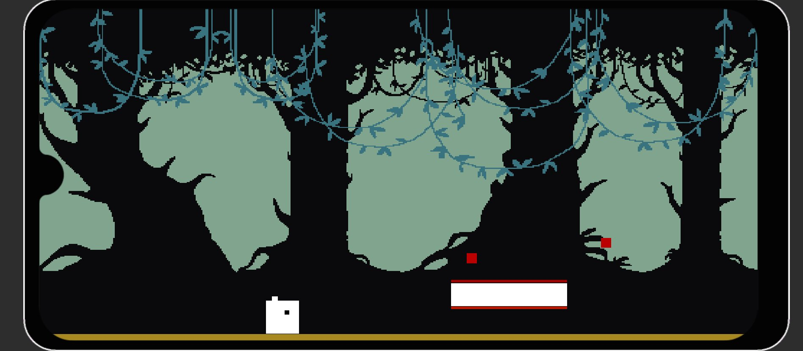
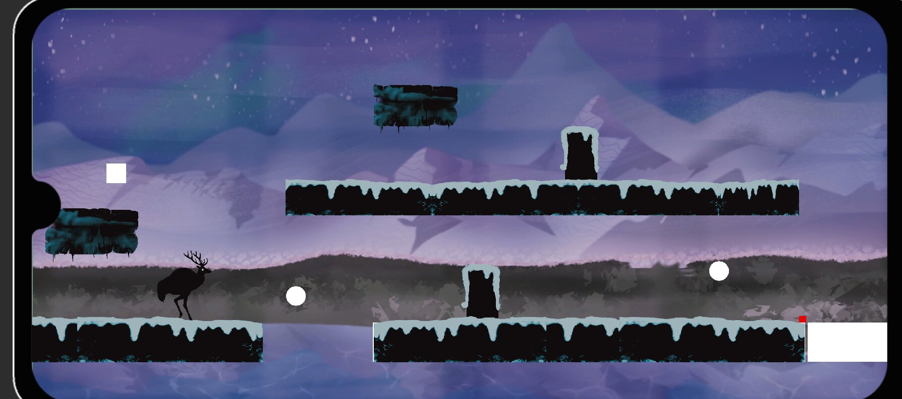
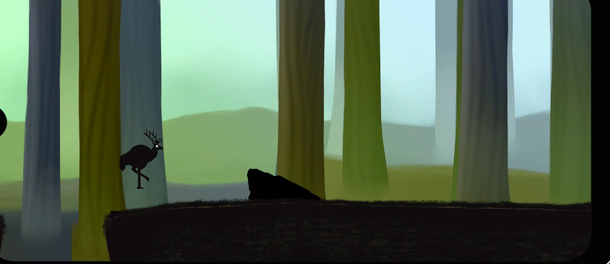
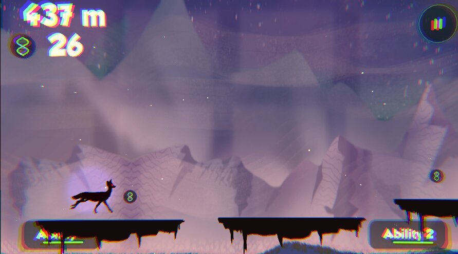
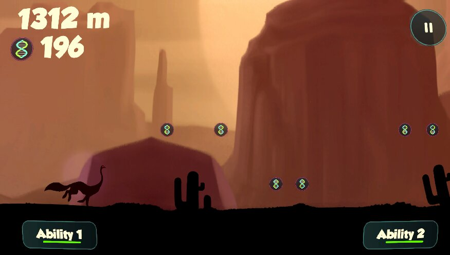

Overview
Lab Run is a 2D endless runner mobile game developed in Unity during a 4-week school production cycle.
- 3 Unique Biomes with distinct visuals and obstacles
- Animal Fusion System combining abilities for strategic variation
- Procedural Obstacles ensuring dynamic replayability
- Upgradeable Skill Tree driven by collectible currency
My Contribution
- Gameplay Prototyping: Implemented core mechanics and validated early gameplay feel
- Level Design: Designed progression pacing and obstacle composition
- Lighting & Post-Processing: Enhanced clarity and atmosphere
- Documentation: Contributed to structured GDD communication
- FMOD Integration: Assisted with sound implementation
Production Iterations



Final Product


Reflection
This project highlighted the importance of production timelines and milestone discipline. Falling behind schedule demonstrated how quickly team momentum can shift when delivery goals are missed.
It reinforced the importance of initiative, cross-discipline communication, and reliable contribution within a team environment.